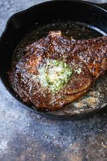

Steak

Description
This is a quite simple recipe that is easy and simple to make. You'll need
to allocate roughly 30 minutes of time for this recipe. 20 minutes for
prep and 10 minutes to cook. This yields 8 servings. Recipe is courtesey
of Bob Cody.
Nutrition Information (Per Serving)
- Calories: 453
- Protein: 37.7g
- Carbohydrates: 1g
- Fat: 32.2g
- Cholestrol: 151.4mg
- Sodium: 166.8mg
Ingredients
- 1/2 Cup Butter
- 2 Teaspoons of Garlic Powder
- 4 Cloves Garlic, Minced
- Pounds beef top sirloin steaks
- Salt and Pepper to taste
Steps
- Preheat an outdoor grill for high heat
-
In a small saucepan, melt butter over medium-low heat with garlic powder
and minced garlic. Set aside
- Sprinkle both sides of each steak with salt and pepper
-
Grill steak 4 to 5 minutes per side or to desired doneness. When done,
transfer to warmed plates. Brush tops liberally with garlic butter, and
allow to rest for 2 to 3 minutes before serving
Recipe
Return to Top
Return to Main Page